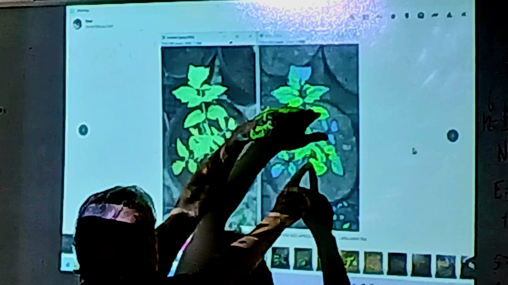

ANÁLISE ESPECTRAL · MATERIAIS ORGÂNICOS E INORGÂNICOS
Toda amostra tem
uma assinatura.
Nós a lemos ao vivo.
Projeto acadêmico que aplica uma nova tecnologia de análise a materiais orgânicos e inorgânicos, com experimentos conduzidos e transmitidos em tempo real — do preparo da amostra ao resultado final.

01 · SOBRE O PROJETO
Uma leitura aberta da matéria
Desenvolvemos e validamos, em ambiente acadêmico, uma tecnologia de análise capaz de caracterizar materiais orgânicos e inorgânicos a partir de amostras de laboratório. Decidimos colocar o processo inteiro na internet — não apenas os resultados finais — para dar visibilidade real ao método e permitir que qualquer pessoa acompanhe a análise acontecendo.
Orgânicos
Identificação de compostos e estruturas em amostras de origem biológica e sintética.
Inorgânicos
Caracterização de minerais, metais e compostos inorgânicos por resposta espectral.
Transmissão aberta
Experimentos executados e transmitidos ao vivo, sem cortes, direto do laboratório.
02 · MÉTODO
Da amostra à transmissão
-
01
Coleta e preparo
A amostra orgânica ou inorgânica é registrada, catalogada e preparada segundo o protocolo do experimento.
-
02
Análise instrumental
A tecnologia captura a resposta da amostra e converte o sinal bruto em dados interpretáveis.
-
03
Leitura em tempo real
Os dados são exibidos conforme chegam, permitindo acompanhar a análise no instante em que ocorre.
-
04
Transmissão e registro
Todo o experimento é transmitido no YouTube e arquivado como material de consulta do projeto.
03 · TRANSMISSÃO
Último projeto
Carregado diretamente do nosso canal. Se estivermos em experimento agora, ele aparece aqui.
04 · EQUIPE
Quem está por trás da análise

Jasper Jose Zanco
Professor Orientador
Nome do integrante
Desenvolvimento & plataforma
Nome do integrante
Documentação & protocolo
05 · CONTATO